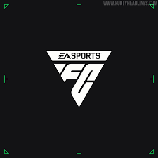

EA Sports FC es la franquicia de simulación de fútbol desarrollada por Electronic Arts (EA), que reemplazó al antiguo sello “FIFA” tras finalizar el acuerdo de licencias con la FIFA en 2022. Con más de 19.000 jugadores, 700 equipos y decenas de ligas y estadios licenciados, el juego combina realismo futbolístico, gráficos avanzados, modos de juego variados y una experiencia global tanto para jugadores casuales como para competiciones de deportes electrónicos.
El desarrollo de la serie está a cargo principalmente de EA Vancouver y EA Rumania, utilizando el motor Frostbite y técnicas de captura de movimiento avanzadas para recrear con precisión la física del balón, los movimientos de los jugadores y la inteligencia artificial de los equipos. La comunidad de jugadores también influye en la evolución de la jugabilidad y los modos de juego.
En las actualizaciones más recientes, como EA Sports FC 26, se introdujeron mejoras significativas en todos los modos. El Modo Carrera se renovó con “Manager Live”, incorporando desafíos dinámicos y eventos inesperados. Se agregó la opción de jugabilidad “Auténtica”, que mejora la física del balón y el comportamiento individual de los jugadores. Además, se ajustaron las tasas de progresión, recompensas, sistemas en línea y temporadas globales, manteniendo la experiencia fresca y competitiva para todos los jugadores.